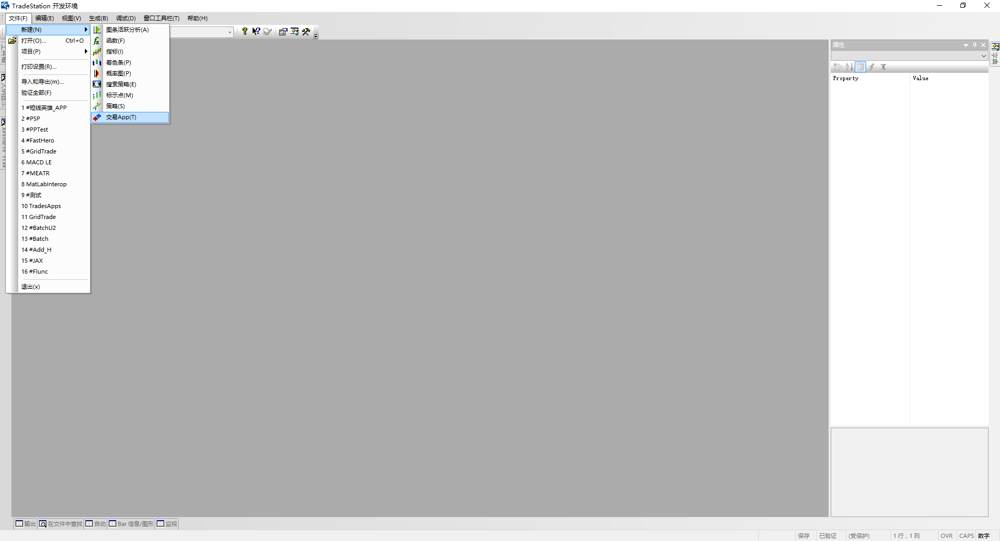
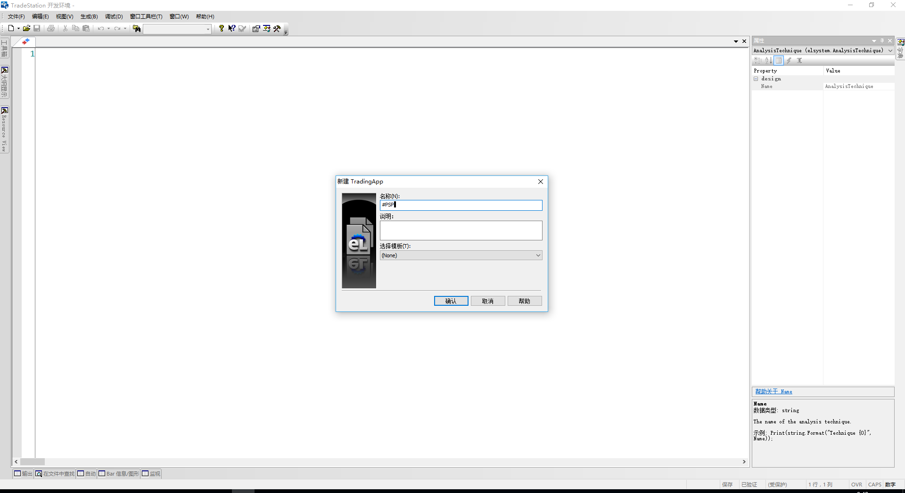
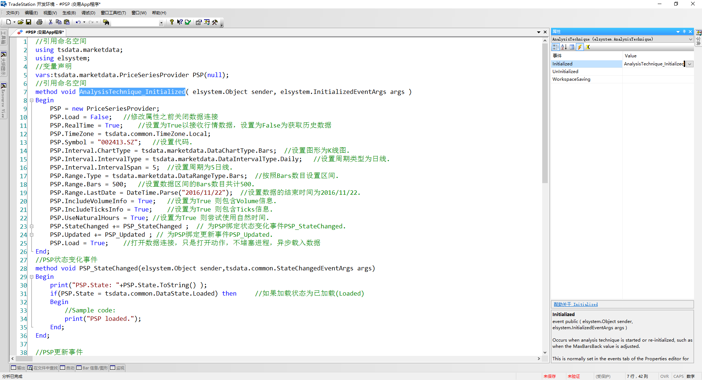

TradeStation Tools 包括国信TradeStation网络检测及诸多组件的代码生成器。生成的代码仅供深入了解组件运行机制与字段含义，但是应按照如下方式才可正常使用：
1、通过视图-EasyLanguage开发环境打开开发环境，点击文件-新建-交易APP（建议）： 
2、输入任意文件名之后，点击确定： 
3、在APP的右侧属性选项卡中点击事件，Initialized填写AnalysisTechnique_Initialized，并保存验证即可： 